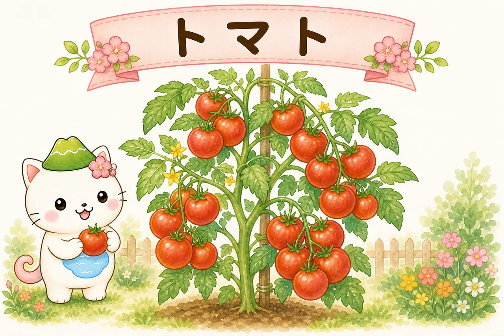
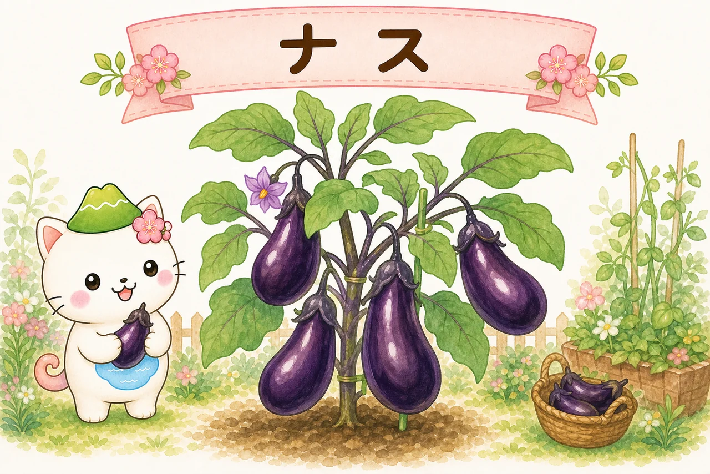
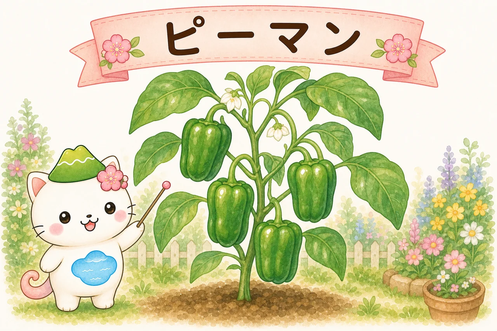
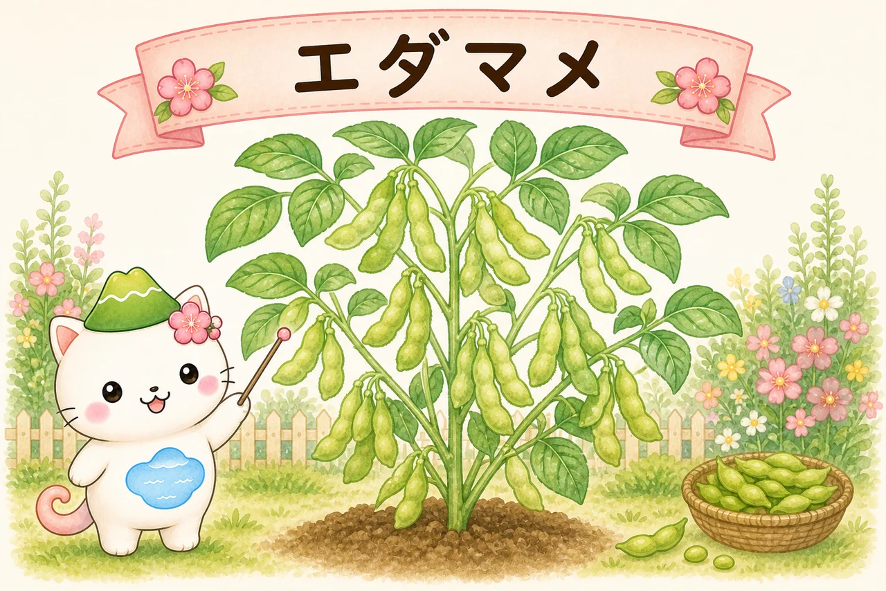
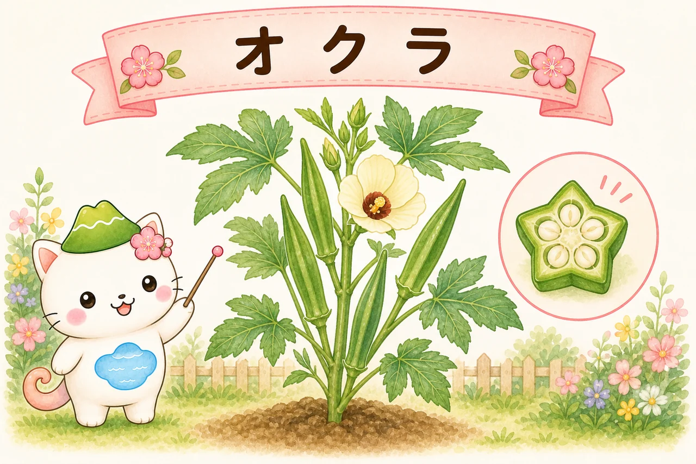
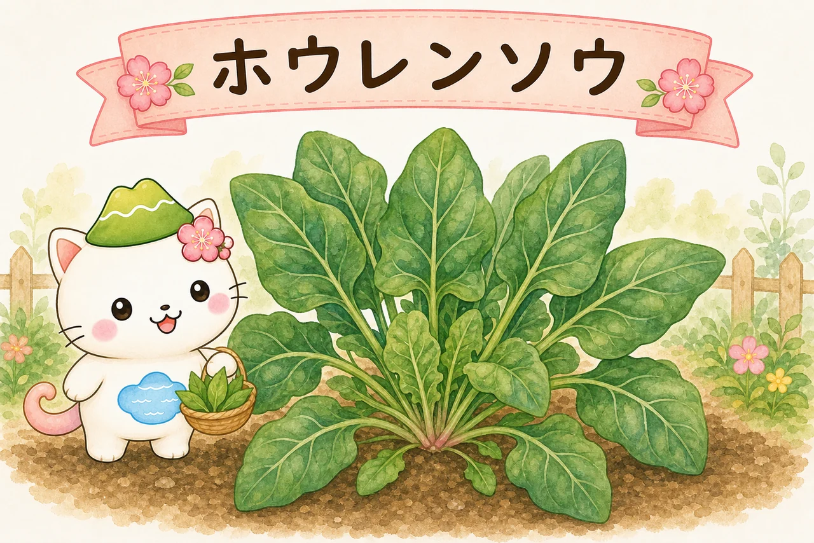

家庭菜園・人気の野菜10種
ベランダのプランターから畑まで、家庭菜園で人気の野菜を10種えらびました。それぞれの栽培時期・難易度・育て方のコツ・注意点を、はじめての人にもわかりやすく個別ページにまとめています。まずは作りやすいものから、気軽に始めてみましょう。

- 日当たりが第一：多くの果菜（トマト・ナスなど）は日なたが必須。半日陰なら葉物が向きます。
- 作りやすいものから：ラディッシュ・エダマメ・ジャガイモは失敗が少なく、収穫の楽しさを味わえます。
- 水と収穫はこまめに：とくに夏野菜は水切れに注意。穫り遅れないことが、長く穫るコツです。
人気の野菜10種

トマト
難易度 ★★☆ ／ 家庭菜園の主役といえばこれ。苗から育てれば初心者でも収穫の喜びを味わえます。乾かし気…

ナス
難易度 ★★☆ ／ 夏じゅう次々と実り、長く楽しめる人気野菜。水と肥料が大好きで、切らさないのが上手に育…

キュウリ
難易度 ★★☆ ／ ぐんぐん育って次々収穫できる、夏の定番。成長が早いぶん水をよく欲しがります。とれたて…

ピーマン
難易度 ★★☆ ／ 暑さに強く丈夫で、夏から秋まで長く穫れる育てやすい野菜。手間が少なく、初めての夏野菜…

エダマメ
難易度 ★☆☆ ／ ビールのお供でおなじみ。肥料控えめで育つ手軽さと、もぎたてのおいしさが魅力。種から直…

オクラ
難易度 ★★☆ ／ 暑さが大好きで、真夏にぐんぐん育つ丈夫な野菜。きれいな花も楽しめます。穫り遅れずに若…

ゴーヤ
難易度 ★★☆ ／ 独特の苦みが夏にうれしいニガウリ。つるがよく茂るので、窓辺の「グリーンカーテン」とし…

ジャガイモ
難易度 ★☆☆ ／ 種いもを植えるだけで育つ、収穫が楽しい定番。土を掘っていもがゴロゴロ出てくる瞬間は、…

ホウレンソウ
難易度 ★★☆ ／ 栄養たっぷりの冬の葉物。涼しい季節に育てるのがコツで、秋まきがいちばん作りやすい初心…

ラディッシュ
難易度 ★☆☆ ／ 種まきから約1か月で穫れる、いちばん手軽な野菜。「二十日大根」の名のとおり成長が早く…

同じ科の野菜を同じ場所で続けて作ると「連作障害」が出やすいよ。ナス科（トマト・ナス・ピーマン・ジャガイモ）は特に、植える場所を毎年ずらすのがおすすめ。